Crecimiento Económico
Cambio tecnológico, género y migración
Género y mercado laboral
- La participación de las mujeres tiende a ser menor que la de los hombres. Sin embargo, las diferencias son notables: en algunos, la proporción es inferior al 25% mientras que en otros la relación es del 100%.
Género y mercado laboral
- La participación de la mujer en la fuerza laboral es más alta en algunos de los países más pobres y ricos del mundo y es más bajo en países con ingresos nacionales promedio en algún punto intermedio.
Género y mercado laboral
- En el período 1980-2016, la mayoría de los países experimentó un aumento en la proporción de mujeres empleadas. En general, la participación de las mujeres en el mercado laboral fue impulsada por el empleo, más que por el desempleo.
Género y mercado laboral
- Closing the Gender Gap (IMF, 2019)

Género y mercado laboral
The macroeconomic benefits of gender diversity (Lagarde, Ostry; 2018)
Al preguntarse por el efecto en la diversidad de género, miden el efecto sustitución entre trabajadores hombres y mujeres.
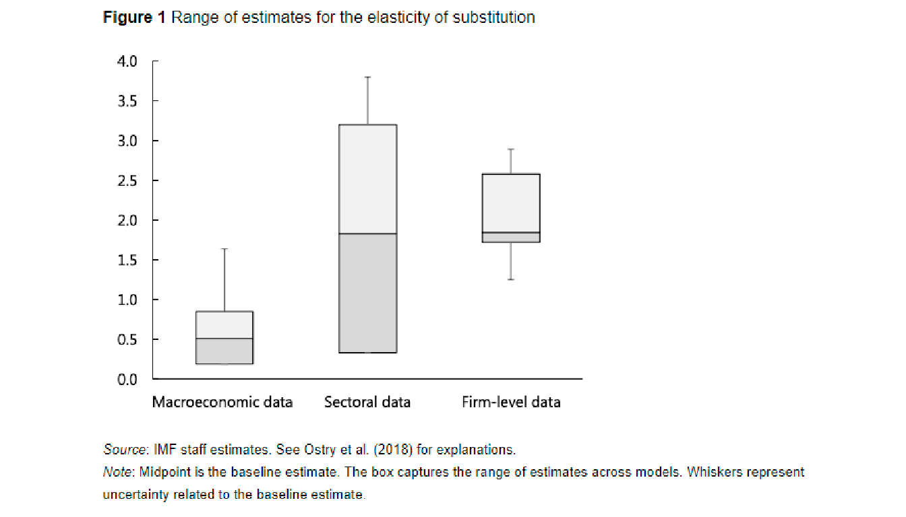
Género y mercado laboral
- The macroeconomic benefits of gender diversity (Lagarde, Ostry; 2018)
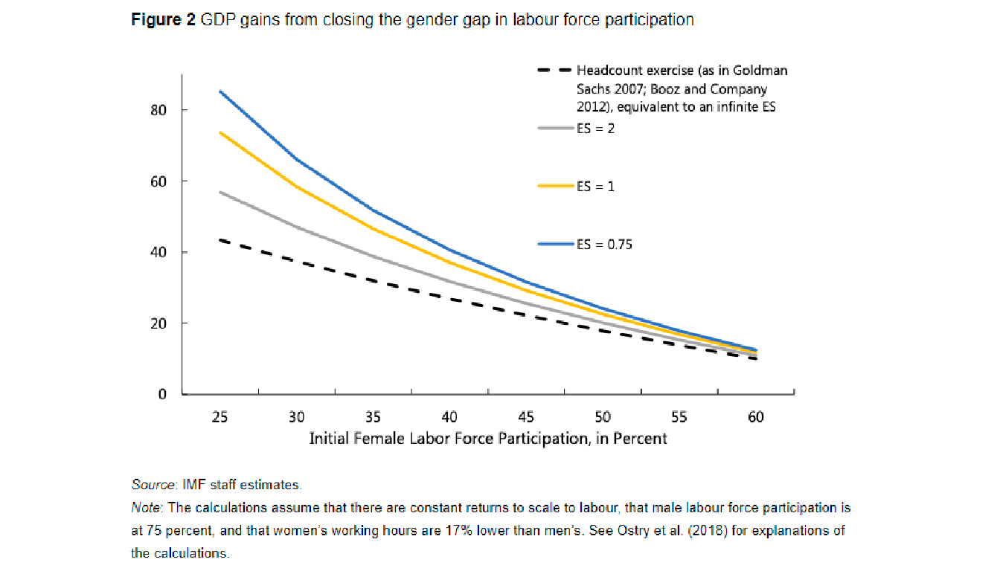
Género y mercado laboral
- The macroeconomic benefits of gender diversity (Lagarde, Ostry; 2018)
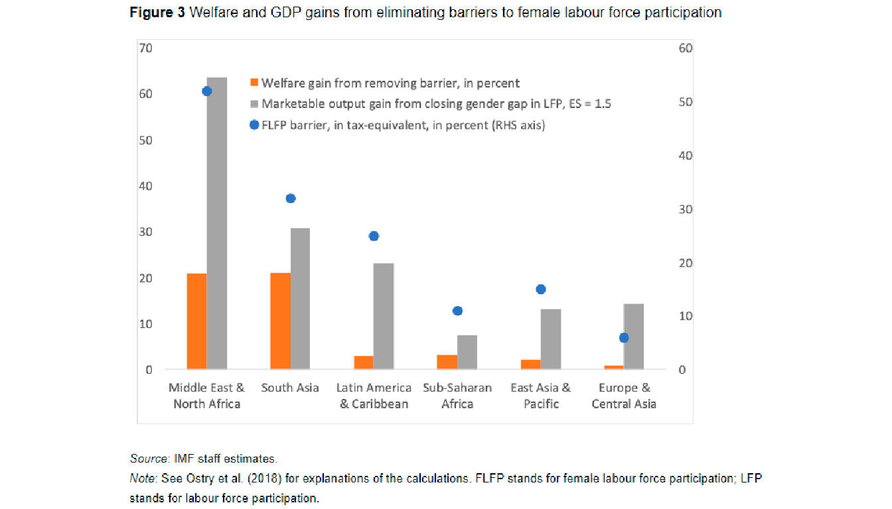
Género y mercado laboral
Working women in the city and urban wage growth in the United States (Weinstein, 2017)
Aún cuando el mecanismo no es claro, dos vías empatan con la teoría económica para prever el comportamiento de los salarios:
Aumento de demanda: si las mujeres se unieron a la fuerza laboral por mayores oportunidades de empleo, entonces los salarios aumentan por el cambio en la participación laboral.
Aumento en oferta: existe un cambio de actitud con respecto del trabajo, aumentaría la oferta de trabajo y reduciría salarios por más gente compitiendo por empleo.
Género y mercado laboral
Working women in the city and urban wage growth in the United States (Weinstein, 2017)
Impacto de inclusión laboral femenina en el alza de salarios reales
Estudio utilizando ciudades de Estados Unidos de 1980 a 2010.
La participación de las mujeres en la fuerza laboral influencia el crecimiento salarial real en aproximadamente 250 áreas metropolitanas de Estados Unidos. Esto ocurre a medida que las mujeres se incorporan aumentando la productividad y aumentando los salarios.
Género y mercado laboral
Working women in the city and urban wage growth in the United States (Weinstein, 2017)
Se encuentra que cada aumento en 10% de participación laboral femenina, está relacionado con un aumento de 5% en el salario real.

Género y mercado laboral
Working women in the city and urban wage growth in the United States (Weinstein, 2017)
Impacto de inclusión laboral femenina en el alza de salarios reales
La participación de la mujer en la fuerza laboral podría aumentar la productividad de la ciudad ya que las mujeres pueden reemplazar a los hombres menos productivos.
Podrían también aumentar el nivel de habilidad general en el área o introducir un set diferente de habilidades complementarias.
El resumen de Weinstein (2017) relaciona un aumento de 10% de la tasa de participación femenina con salarios reales casi 5% mayores. Las magnitudes dependen de la especificación y no deben trasladarse entre regresiones o interpretarse como un cambio de 10 puntos porcentuales. Los mecanismos de oferta y productividad requieren un análisis separado.
Género y mercado laboral
Working women in the city and urban wage growth in the United States (Weinstein, 2017)
El mecanismo por el que esto pasa aún no es claro:
Una mayor representación del consumidor en la empresa.
Una mayor cantidad de aplicantes para que las empresas elijan.
Aportar diferentes habilidades y perspectivas en el desarrollo de actividades laborales.
Género y mercado laboral
Gender Inequality and Economic Growth: A cross-country analysis (Seguino, 2000)
La hipótesis principal es que la desigualdad de género que reduce los salarios de las mujeres relativo al de los hombres es un estímulo en economías orientadas a la exportación.
El efecto en el crecimiento es transmitido vía el estímulo a la inversión producido por la expansión del sector exportador.
El cambio tecnológico sirve como un signo de rentabilidad por lo que es necesario que también haya una fuerza laboral calificada que puede adaptarse. El efecto neto de los beneficios de la educación de las mujeres se vuelve confuso cuando a pesar de ser calificadas, las mujeres siguen incorporándose a los mismos sectores que antes.
La segregación ocupacional por género se vuelve un factor muy relevante porque las mujeres tienden a estar en empleos con salarios más bajos y en industrias donde se producen bienes que son elásticos en el precio.
Género y mercado laboral
- Gender Inequality and Economic Growth: A cross-country analysis (Seguino, 2000)

Género y mercado laboral
The Impact of Gender Inequality in Education and Employment on Economic Growth: New Evidence for a Panel of Countries (Klassen, Lamanna, 2009)
Las disparidades de género reducen el crecimiento económico
Los autores analizan el crecimiento de largo plazo con datos que van de 1960 al 2000. Consideran regresiones en panel tomando a cada década como un dato para cada país. Buscan capturar los efectos directos e indirectos de la desigualdad de género en el crecimiento económico.

Género y mercado laboral
Closing the Gender Gap (IMF, 2019)
Políticas públicas
La mejor política posible dependerá del nivel de desarrollo económico, de la brecha existente y de la velocidad con la que la nueva tecnología afecte a la economía. Sin embargo, se recomienda enfocarse en las siguientes políticas:
Atraer a más mujeres a la fuerza laboral: infraestructura que facilite a las mujeres conciliar trabajo y vida familiar son particularmente efectivas, apoyar mujeres empresarias al incrementar su acceso a financiamiento, promover igualdad de derechos para mujeres en economías avanzadas, presionar para mayor paridad para licencia de paternidad y maternidad y promover acceso a cuidado infantil a precio factible.
Brindar a las mujeres habilidades adecuadas y empoderarlas en el lugar de trabajo a punto de entrar: inversión en educación y servicios de salud.
Ya en el mercado laboral: deducción de impuestos para prácticas, subsidios a capacitación por parte de compañías privadas por medio de impuestos y subvenciones públicas, así como asegurar apoyo para mujeres desplazadas mediante políticas para mejorar habilidades.
Género y mercado laboral
Women Empowerment and Economic Development (Duflo, 2011)
El empoderamiento de la mujer y el desarrollo económico están estrechamente relacionados entre sí.
Por un lado, el desarrollo económico por sí solo es insuficiente para asegurar un progreso significativo en dimensiones importantes del empoderamiento de la mujer. Por otro lado, el empoderamiento de la mujer conduce a la mejora en algunos aspectos del bienestar de los niños (salud y nutrición, en particular), pero a expensas de otros (educación).
Esto sugiere que ni el desarrollo económico ni el empoderamiento de la mujer son la fórmula mágica que a veces se pretende. Puede que este no sea el mensaje más reconfortante de transmitir, pero puede ser necesario para evitar la reacción que generalmente atraen las soluciones milagrosas fallidas.
Género y mercado laboral
COVID-19 and implication for automation (Chenoff, Warman, 2020)
El Covid 19 ha acelerado la automatización de trabajos debido a que hay ocupaciones que tienen un mayor riesgo de infección viral y un alto potencial de automatización
El paper contribuye con la creación y desarrollo de índices de automatización y de riesgo de transmisión de Covid 19 en ciertas ocupaciones
El estudio muestra cómo las mujeres son un grupo demográfico con alto riesgo de transmisión viral y con alto potencial de automatización
Género y mercado laboral
- COVID-19 and implication for automation (Chenoff, Warman, 2020)
Usando datos de O*Net se crearon dos índices para analizar a la población de Estados Unidos:
Índice de Riesgo de Transmisión Viral de una ocupación, considerando la proximidad física, discusiones cara a cara y exposición a enfermedades.
Índice de Riesgo de automatización de una ocupación con una medida de la intensidad de las tareas rutinarias
Género y mercado laboral
COVID-19 and implication for automation (Chenoff, Warman, 2020)
Los trabajadores en ocupaciones de alto riesgo representan alrededor del 17.9% de la población estadounidense empleada de 2013 a 2017 Y los trabajadores en ocupaciones de bajo riesgo representan poco menos del 32%
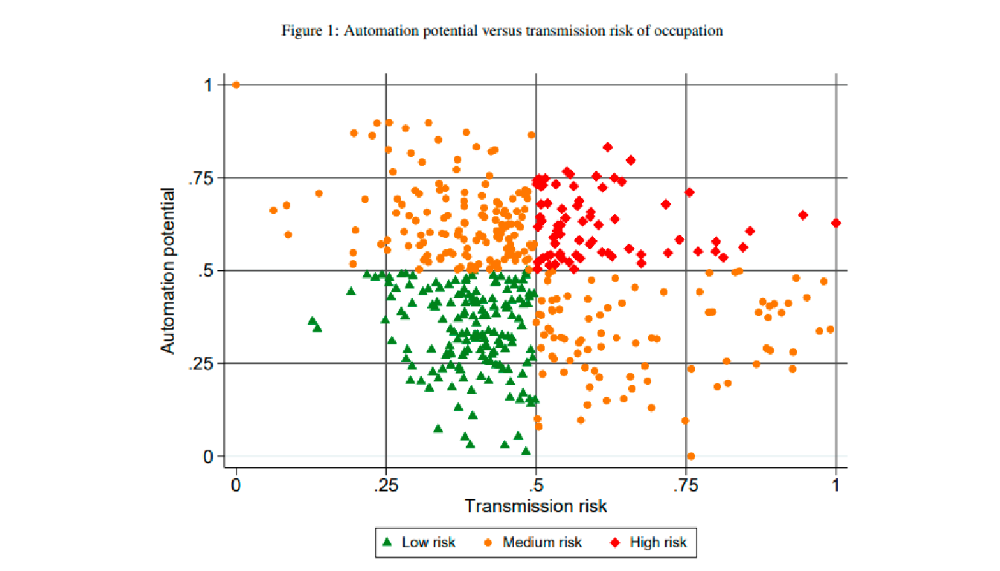
Género y mercado laboral
COVID-19 and implication for automation (Chenoff, Warman, 2020)
Los trabajadores en ocupaciones de alto riesgo representan alrededor del 17.9% de la población estadounidense empleada de 2013 a 2017 Y los trabajadores en ocupaciones de bajo riesgo representan poco menos del 32%
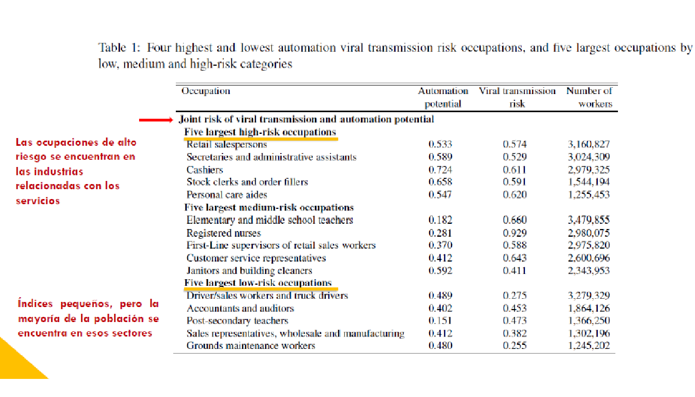
Género y mercado laboral
- COVID-19 and implication for automation (Chenoff, Warman, 2020)

Género y mercado laboral
COVID-19 and implication for automation (Chenoff, Warman, 2020)
Hay una porcentaje mayor de mujeres que de hombres en ocupaciones de alto riesgo.

Género y mercado laboral
COVID-19 and implication for automation (Chenoff, Warman, 2020)
Tanto para hombres como para mujeres, los trabajadores con salarios bajos y medios enfrentan un mayor riesgo que sus contrapartes con salarios altos.

Género y mercado laboral
COVID-19 and implication for automation (Chenoff, Warman, 2020)
El diferencial entre trabajadores con educación de nivel alto y bajo/medio es más marcado para las mujeres que para los hombres.

Género y mercado laboral
The shecession (she recession) of 2020: Causes and consequences (Alon , Doepke , Olmstead Rumsey , Tertilt; 2021)
La desaceleración provocada por la pandemia Covid 19 ha creado mayores pérdidas de empleo para las mujeres que para los hombres
La pérdida de puestos de trabajo en mayor proporción para las mujeres reducirá la capacidad de las familias para compensar la pérdida de ingresos, lo que producirá una recesión más profunda y persistente
Género y mercado laboral
- The shecession (she recession) of 2020: Causes and consequences (Alon , Doepke , Olmstead Rumsey , Tertilt; 2021)

Género y mercado laboral
The shecession (she recession) of 2020: Causes and consequences (Alon , Doepke , Olmstead Rumsey , Tertilt; 2021)
Causas principales del impacto desproporcionado en el empleo de la mujer
El empleo de las mujeres se concentra en sectores que son relativamente estables en los ciclos económicos típicos, pero que se vieron fuertemente afectados durante la pandemia
A medida que se cerraron las escuelas y las guarderías, se multiplicaron las necesidades de cuidado de los hijos y las mujeres han proporcionado la mayor parte del cuidado infantil
Género y mercado laboral
The shecession (she recession) of 2020: Causes and consequences (Alon , Doepke , Olmstead Rumsey , Tertilt; 2021)
Causas principales del impacto desproporcionado en el empleo de la mujer
Género y mercado laboral
- The shecession (she recession) of 2020: Causes and consequences (Alon , Doepke , Olmstead Rumsey , Tertilt; 2021)

Género y mercado laboral
- The shecession (she recession) of 2020: Causes and consequences (Alon , Doepke , Olmstead Rumsey , Tertilt; 2021)
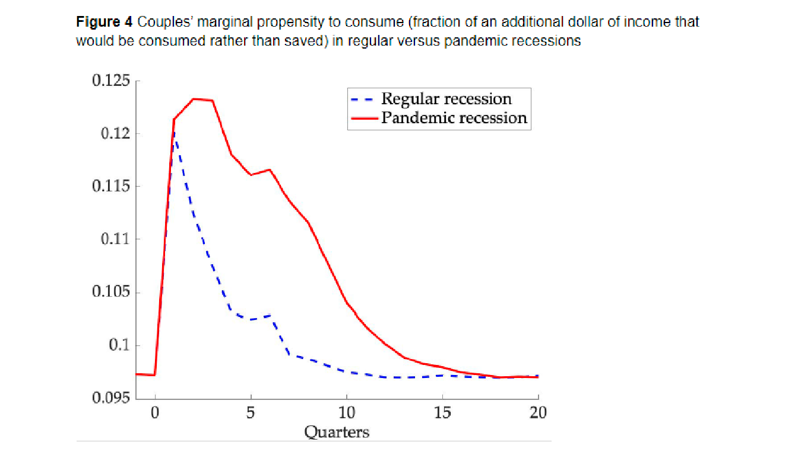
Género y mercado laboral
- The shecession (she recession) of 2020: Causes and consequences (Alon , Doepke , Olmstead Rumsey , Tertilt; 2021)

Migración y mercado laboral
Immigration in American Economic History (Abramitsky, Boustan 2016)
La inmigración masiva fue históricamente muy rara, por lo que incluso un movimiento relativamente pequeño hacia los Estados Unidos parecía grande en comparación. En números absolutos, esto representó a millones de personas.
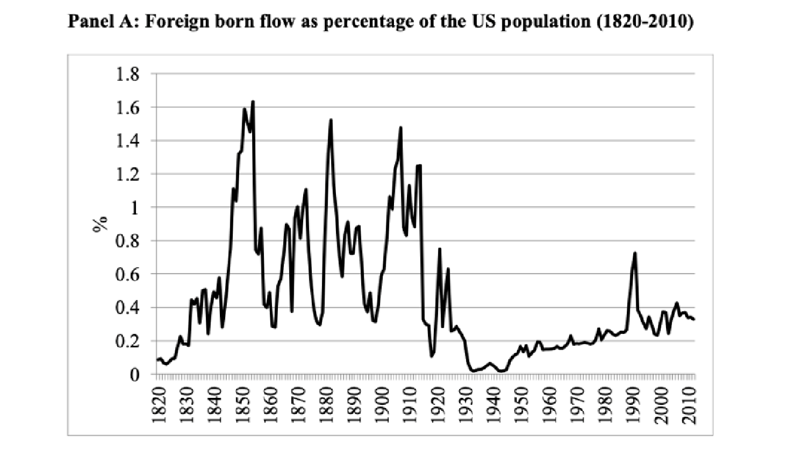
Migración y mercado laboral
Immigration in American Economic History (Abramitsky, Boustan 2016)
La razón del aumento de los flujos porcentuales en los últimos años es que las tasas de fertilidad son muy bajas, por lo que la población nativa no está creciendo tan rápido como lo hizo en el siglo XIX o principios del XX.
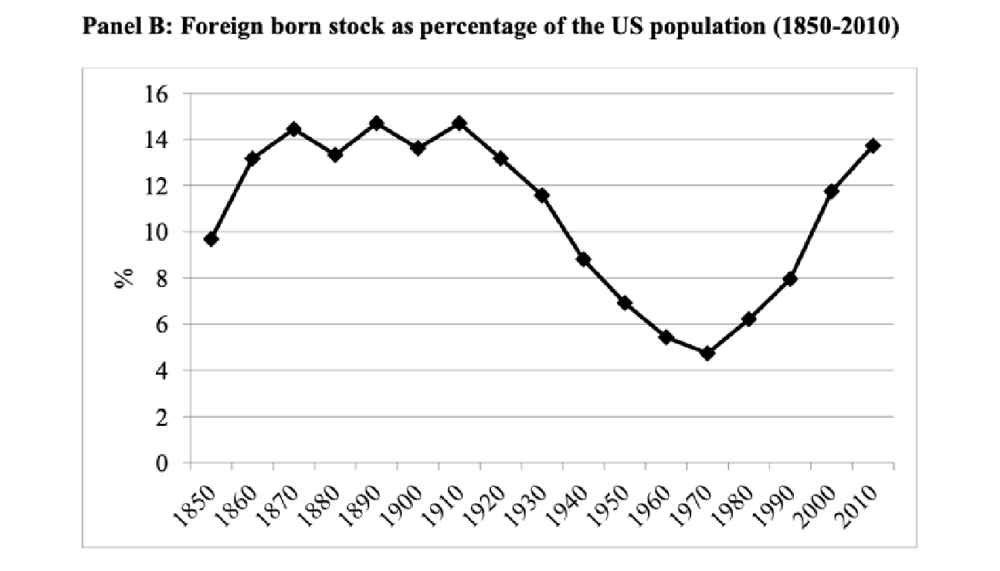
Migración y mercado laboral
Immigration in American Economic History (Abramitsky, Boustan 2016)
En la década de 1990 ya no había una gran inmigración de Europa, sino de América Latina y Asia. Al mismo tiempo, los inmigrantes chinos, indios y vietnamitas aumentaron.
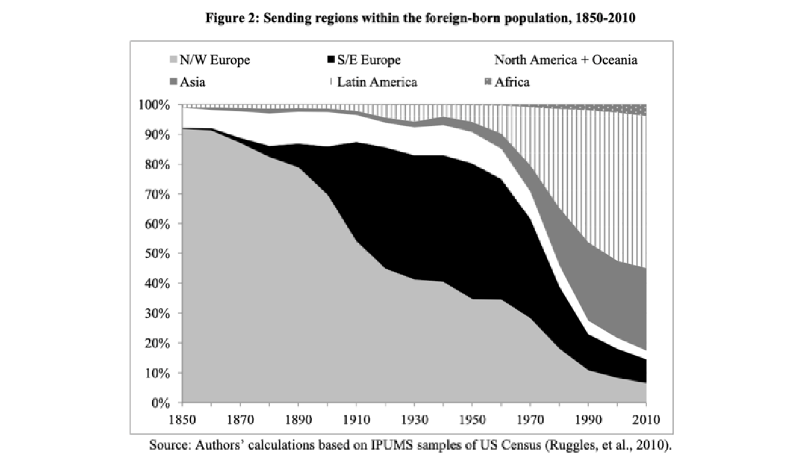
Migración y mercado laboral
- Dado que la inmigración es un proceso continuo, tiene sentido pensar en ello en el contexto del modelo de Solow como un cambio en la tasa de crecimiento de la población en lugar de como un cambio único para el factor trabajo.
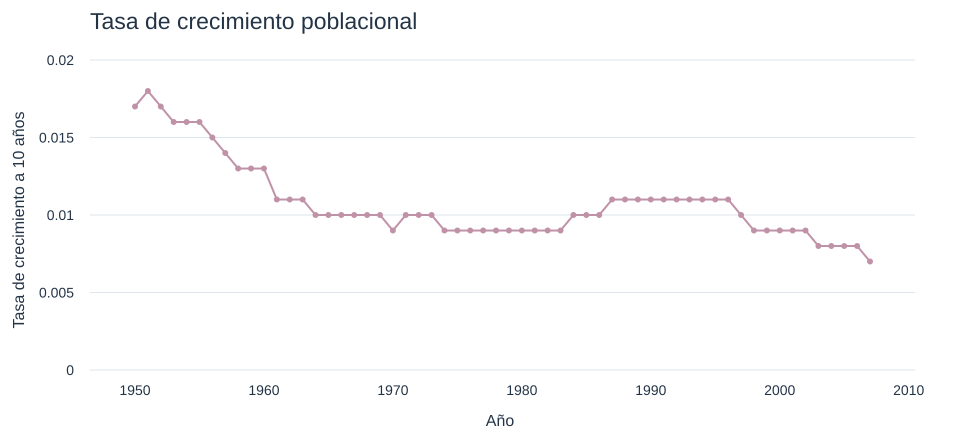
Migración y mercado laboral
- Immigrants, Productivity, and Labor Markets (Peri, 2016)
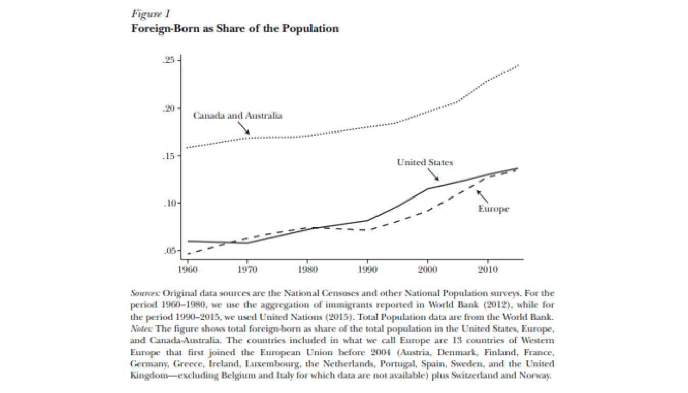
Migración y mercado laboral
Immigrants, Productivity, and Labor Markets (Peri, 2016)
En los últimos 25 años el porcentaje de los inmigrantes de países pobres a ricos ha aumentado.
Mayores tasas a países con niveles medios de desarrollo económico.
Migración de personas calificadas es mayor pues obtienen mayores beneficios económicos al emigrar.
Análisis:
La migración en analizada como un cambio en la oferta de trabajo heterogéneos.
Las tareas que realizan las personas nativas e inmigrantes son variadas.
Los trabajadores y empresas nativas pueden cambiar sus decisiones por la migración.
Los inmigrantes pueden afectar el factor de productividad total a nivel total.
Migración y mercado laboral
Immigrants, Productivity, and Labor Markets (Peri, 2016)
En Estados Unidos se estimó que:
Un efecto positivo de un aumento en la migración de personas de diferentes países en la productividad laboral.
Un aumento en la migración llevó a que los nativos sin universidad se enfocarán en actividad no manuales, y hubo un aumento marginal en los salarios.
Un aumento de migración no calificada aumento las técnicas de producción y no hubo cambios en los salarios de los nativos.
En Europa se mostró que:
Los inmigrantes tienen mayor participación de mercado y tienden a desplazar a los inmigrantes.
Hay cierto “skill downgrading” de los inmigrantes pues, aunque tengan un grado alto de educación tienen trabajos similares a los nativos con menores grados de educación.
Migración y mercado laboral
Recent trends in high-skilled migration to the United States and other OECD countries (Dumont, 2014)
La inmigración de jóvenes con habilidades altas puede ayudar a compensar los efectos del cambio demográfico
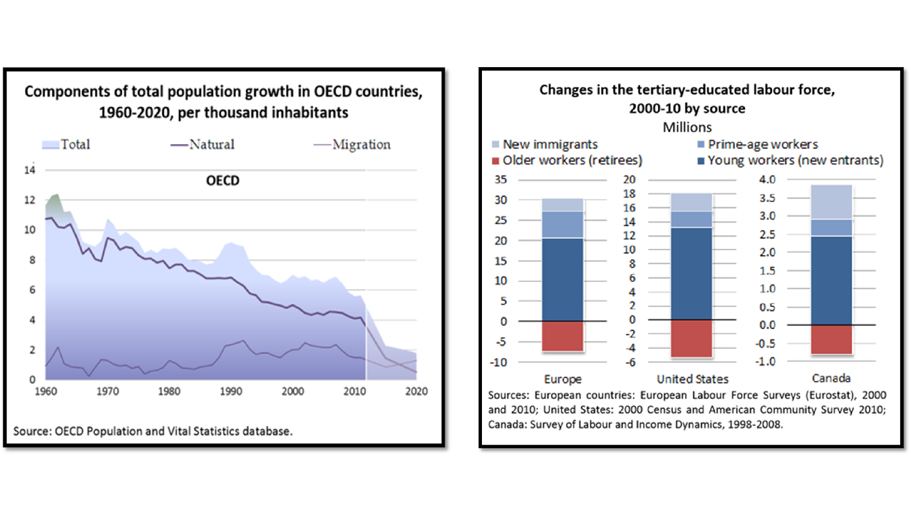
Migración y mercado laboral
Recent trends in high-skilled migration to the United States and other OECD countries (Dumont, 2014)
En términos relativos, Estados Unidos no es uno de los principales países de inmigración y la participación de los inmigrantes altamente calificados en el mercado estadounidense está disminuyendo
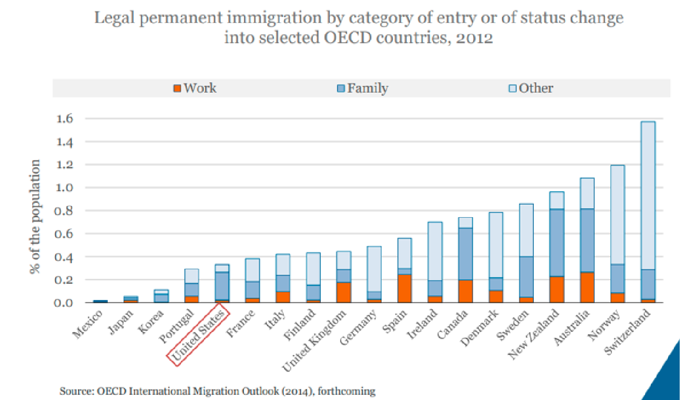
Migración y mercado laboral
Recent trends in high-skilled migration to the United States and other OECD countries (Dumont, 2014)
Diversos enfoques en la contratación de trabajadores extranjeros altamente calificados

Migración y mercado laboral
Recent trends in high-skilled migration to the United States and other OECD countries (Dumont, 2014)
No en todos los países los inmigrantes con alta habilidad cuentan con más oportunidades.
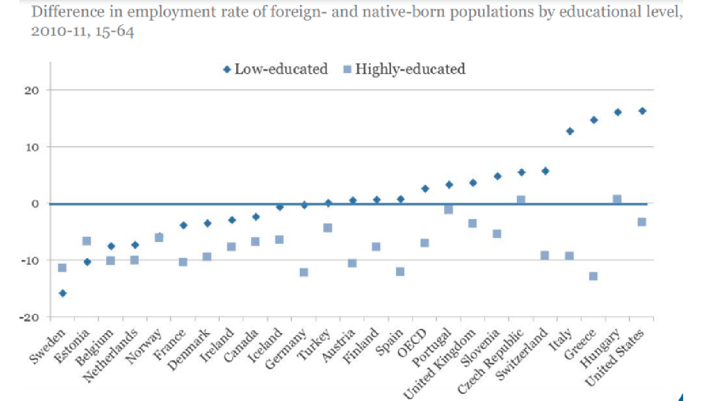